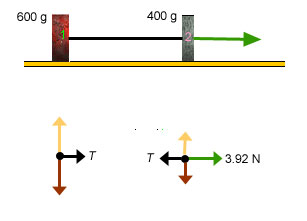

Solving the Equations. Adding the left-hand sides and the
right-hand sides of equations (3) and (4) causes T to drop
out and leads to the following equation for a:
0.4g = 0.6a + 0.4a =
1.0a
whence
a = 0.4x9.8 = 3.92 m/s2,
(5)
to significant figures consistent with the data.
This is the value displayed by the applet.
Back to the Top
The Easy Way to Calculate the Acceleration
- Introduction of a System Dynamically Equivalent to Fletcher's
Trolley
Let us consider a system that looks somewhat different from
Fletcher's Trolley, the system shown in the diagram below, together
with the free-body diagrams for the two blocks.

The system consists of two blocks with the same masses as in
Fletcher's Trolley, 600 g and 400 g. The blocks are connected by a
massless, inextensible string and can slide without friction on a
horizontal table. A force of magnitude 3.92 N is acting on block 2 to
the right. This force has the same magnitude as the force of gravity
that is acting on block 2 in the downward direction in Fletcher's
Trolley.
This horizontal system is dynamically equivalent to Fletcher's
Trolley, because Newton's second law applied to the two blocks leads
to the same equations for both systems, namely, equations (3) and (4)
above. This becomes clear when you consider the free-body diagrams
for the horizontal system and compare them to those for Fletcher's
Trolley. Both sets of free-body diagrams look alike, except that the
diagram for block 2 in the horizontal system is turned by
900 relative to that in Fletcher's Trolley. Again, the
magnitudes of the forces applied by the string to either block 1 or
block 2 are equal to the tension T in the string.
The same free-body diagrams with the same masses and forces imply
the same equations from Newton's second law. If both systems are
governed by the same equations for a and T, the
resulting values for a and T will be the same as well.
Thus, the two systems are dynamically equivalent. All the pulley does
is to change the direction of the string and the direction of motion
of block 2.
So, is there an advantage in considering the horizontal system in
place of Fletcher's Trolley? Yes, because it is easier to find
the acceleration for the horizontal system. For the horizontal
system, there is another way to find the acceleration than solving
equations (3) and (4). Here is what you can do.
- Setting up the Basic Equation. Since the string does not
stretch, both blocks and the string move in unison like a rigid
body. By Newton's second law of motion, the net external force acting
on a rigid body is equal to the body's mass times its acceleration.
Thus,
3.92 N = (0.600 kg + 0.400 kg) a = 1.00 x
a. (6)
- Solving the Equation. This step is trivial:
a = 3.92 m/s2
. (7)
This is the same value that was found earlier, result (5), and that
is displayed by the applet.
- Comment. When a body is rigid, the only forces that
need to be considered in finding the body's acceleration are the
external forces. The internal forces, in the horizontal system
the forces exerted by the string on the two blocks, can be ignored.
(In Fletcher's Trolley, the system is not a rigid body because the two
blocks are moving in different directions. Thus, we need to consider
the forces acting on each block separately.)
Back to the
Top
Tension in the String
Question: How can one calculate the tension present in the
string when the blocks are moving?
Answer. The tension is not measured as easily as the
acceleration. One would have to insert a strain gauge into the
string, which would not be massless and would have an effect on the
conditions in the system including the tension. Thus, it is
particularly important that one knows how to calculate the tension.
E.g., an engineer who has to design a system like Fletcher's Trolley
will want to know how strong to make the string so that it will not
break under the tension that it has to sustain.
If one already has a value for the acceleration, the easiest way to
find the tension is to substitute value (7) for a in equation
(3). This immediately gives the value
T = 0.600x3.92 = 2.35 N
. (8)
The applet displays a value of 2.4 N, which is consistent with
this.
You should verify that equation (4) too is satisfied by the pair of
values (7) and (8).
Note that the tension value of 2.35 N is less than the
weight of block 2. The latter is equal to W2 =
m2g = 0.400x9.8 = 3.92 N.
Back to the Top
Working with Symbols
Suppose you have to find the acceleration and tension for a
different set of masses. You would have to do the same calculations
all over again if you have worked things out only with numbers until
now. If, instead of working with numbers you work with the symbols
m1 and m2 and derive general
expressions for a and T that are expressed in terms of
these symbols, then all you need to do to find values for a and
T is substitute the masses of the blocks into these general
expressions. You don't need to solve the same equations all over
again, every time you are dealing with a different pair of mass
values.
Exercise. Try to obtain general expressions for a
and T in terms of m1 and m2
by generalizing equations (3) and (4) so that the numerical mass
values are replaced by the symbols m1 and
m2, and then solving these equations for a
and T.
Solution.
Newton 2 applied to block 1, x-direction only, when the blocks
are in motion:
T1 =
m1a. (9)
Newton 2 applied to block 2, y-direction only, when the blocks
are in motion:
W2 - T2 =
m2a. (10)
Equations (9) and (10) are the generalizations in terms of symbols
of equations (3) and (4).
Now let us solve equations (9) and (10).
When we add the two left-hand sides and the two right-hand sides,
the tension cancels and we get an equation that involves only the
unknown a,
W2 = (m1 +
m2)a
(11)
whence
a =
W2/(m1 + m2)
= [m2/(m1 + m2)]
g (12)
where W2 = m2g has been used.
Equation (12) gives us an expression for a into which we
merely need to substitute the mass values to find the corresponding
value for a. If we do this for m1 = 0.600 kg
and m2 = 0.400 kg, we get
a = [0.4/(0.6 + 0.4)] x 9.8 = 3.92 m
s-2. (13)
This is again value (7) for a found earlier and the value
given by the applet.
To get the general expression for the tension T, we substite
expression (12) in equation (9). This gives
T =
[m1m2/(m1 +
m2)] g, when blocks are
moving. (14)
Substituting the present mass values into equation (14), gives for
the tension when the blocks are in motion
T = [0.6x0.4/(0.6 + 0.4)] x 9.8 = 2.35
N. (15)
Comments. The general expressions (12) and (14) for
a and T have other advantages besides saving you the
hassle of having to solve the basic equations every time all over
again. Here are some of these.
- One can check the dimensions of expressions (12) and (14). If
they are correct, then this reassures us that the answers are correct.
In expression (12), the ratio of masses is dimensionless. That leaves
us with g on the right-hand side which has the dimension of
acceleration, as does the left-hand side. Thus, the equation is
correct dimensionally. One cannot carry out such a check if one works
with numbers.
In expression (14), the numerator of the fraction is the square of
a mass and the denominator a mass. Thus, the ratio of the two is a
mass. Multiplied by g, which has the units of acceleration, gives a
force because mass times acceleration is a force. Thus, the
right-hand side has the dimensions of force, which is as it should be
because tension has the dimensions of force as well.
- One can test expression (14) for the tension by checking whether
it gives the right answer in an extreme case where one knows
intuitively what the tension should be. E.g., take
m2 = 0. In this case, one would expect the tension
T to be zero as well. Expression (14) does give this
answer.
This is the same as value (8) found earlier.
Back to the Top
Conditions Affecting the Tension
- Question. Expression (14) gives the tension in the string
when the blocks are moving. Obviously, the value of the tension
depends on the masses of the blocks. What other conditions could be
varied that might affect the tension?
Does expression (14) still apply when block 1 is held fixed and the
system is at rest? In other words, does the tension have the same
value no matter whether the blocks are moving or are at rest? Or is
the tension perhaps larger when the blocks are accelerating?
Answer. Look at the free-body diagrams in the snapshot
below showing the system when block 1 is held fixed.
The free-body diagram for block 2 shows the same two forces acting
on the block now as when the block is moving: the upward force of
magnitude T exerted by the string and the downward force of
gravity of magnitude W2. However, this qualitative
similarity does not mean that T has the same value in both
cases.
Based on the free-body diagram for block 2, Newton's second law
implies equation of motion (10) for the block, already considered
earlier:
W2 - T2 =
m2a. (10)
When the blocks are in motion, a > 0 so that the right-hand
side is positive. This implies that the tension is smaller than the
weight when the blocks are moving. However, when the blocks are at
rest, a = 0. With that, equation (10) implies that the tension
is equal to the weight. Thus, the tension is less when
the blocks are accelerating than when they are at rest with block 2
hanging freely.
- Question. So far, we have always assumed the pulley's mass
to be zero. Does the tension in the string change when the pulley's
mass is changed?
Experiment. Reset the applet. Then use the pulley slider to
set the pulley's moment of inertia, I, equal to 0.125 kg
m2. The pulley's mass will then be equal to 1.00 kg.
Back to the
Top
Appendix - Equations for Motions with
Constant Acceleration
In the equations in the table below, it is assumed that an
object is moving along an x-axis with constant acceleration
ax. For a motion along a y-axis with constant
acceleration, the equations are analogous. You would only replace
the subscript x by y.
Notation. Both the velocity, vx, and
the acceleration, ax, will be written here with
the subscript x. Quantities that carry the subscript
x can be either positive or negative. The subscript
notation distinguishes these quantities from others that can take
on only positive values (or zero), like the speed, v, and
the magnitude a of the acceleration. Quantities without
subscript are equal to the absolute values of the corresponding
quantities with subscript:
v = |vx|
and a = |ax|.
The notation vx(t) indicates the
value of the velocity vx at time t.
Similarly, x(t) indicates the value of the position
x at time t.
Acceleration, Velocity, and Position vs. Time:
| Acceleration | ax = const | (A1) |
| Velocity | vx(t) =
vx(0) + axt | (A2) |
| Position | x(t) = x(0) +
vx(0)t +
(ax/2)t2 | (A3) |
Speed vs. Displacement:
Dv2 =
v2(t) - v2(0) =
2axDx =
2ax[x(t) - x(0)] .
(A4)
Back to the Top
 .
.
 .
Observe the motion until the motion is automatically paused when block
2 reaches h = 0. (See ShowMe - Fletcher's Trolley for details
on what happens to the platform before the block reaches this point.)
Then click Replay
.
Observe the motion until the motion is automatically paused when block
2 reaches h = 0. (See ShowMe - Fletcher's Trolley for details
on what happens to the platform before the block reaches this point.)
Then click Replay  .
.
 through the motion until
block 2 reaches h = 0 and note down the values of the speed and
the time at each instant. E.g., at t = 0.20 s, v = 0.8
m/s.
through the motion until
block 2 reaches h = 0 and note down the values of the speed and
the time at each instant. E.g., at t = 0.20 s, v = 0.8
m/s.